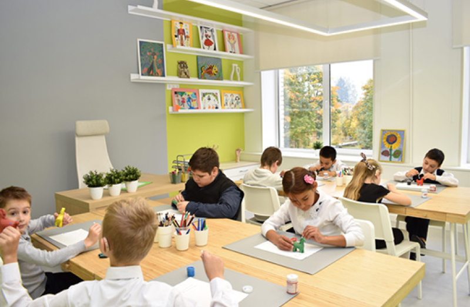

Построено
Ключевые результаты национального
Созданы и функционируют
14 000 центров образования «Точка роста»,
в которых обучающиеся общеобразовательных организаций, расположенныхв сельской местности и малых городах,
осваивают образовательные программы общего и дополнительного образованияс использованием современного оборудования
Созданы и функционируют
232 детских технопарка «Кванториум»,
в том числе97 технопарков
на базе общеобразовательных организаций637 школ,
реализующих исключительно адаптированные образовательные программы,обновили материально–техническую базу
для проведения занятийдля детей с ОВЗ и инвалидностью

Функционирует единая федеральная система научно-методического
сопровождения педагогических работников и управленческих кадров,
в рамках которой в субъектах Российской Федерации работают центры непрерывного повышения профессионального мастерства педагогов.Более 33% педагогических работников
и управленческих кадров системы образованияпрошли повышение квалификации
по дополнительным профессиональным программам из федерального реестраДля обеспечения системы образования высококвалифицированными кадрами
в 20 педагогических вузах
Минпросвещения Россиифункционируют педагогические технопарки «Кванториум»
Созданы более 1 миллиона новых мест
дополнительного образования
в образовательных организациях различных типовВ 4 223 школах
сельской местности и малых городовобновлены условия для занятий физической культурой и спортом
Созданы и функционируют
198 центров цифрового образования «IT-куб»,
30 ключевых центров
дополнительного образования детей,85 мобильных технопарков «Кванториум»
В 61 субъекте
Российской Федерации функционируют региональныецентры выявления, поддержки и развития способностей и талантов
у детей и молодежи(«Мини-Сириусы»)
Созданы и функционируют
59 центров опережающей профессиональной подготовки
и более 3100 современных мастерских,
которые обеспечены передовыми технологиямидля проведения практических учебных занятий
по освоению современных профессий и последующей сдачи экзаменов в форме демонстрационного экзаменаБолее 37%
общеобразовательных организацийобеспечены материально–технической базой
для внедрения цифровой образовательной среды
Более 13 миллионов граждан Российской Федерации вовлечены
центрами (сообществами, объединениями) поддержки добровольчествав добровольческую (волонтерскую) деятельность
Более 660 тысяч граждан
Российской Федерацииохвачены проведением 39 профессиональных конкурсов
в целях предоставления возможностейдля профессионального и карьерного роста
Более 570 тысяч человек,
в том числе детей и молодежи,приняли участие во всероссийских, окружных и межрегиональных мероприятиях в сфере патриотического воспитания,
организованных при грантовой поддержке из средств федерального бюджетаСборные команды Российской Федерации успешно
приняли участие в международных олимпиадах по 8-ми общеобразовательным предметам
(математика, физика, биология, химия, география, информатика, астрономия и астрофизика, по естественным наукам для юниоров). Членами сборных командзавоеваны 146 медали, в том числе 103 золотые и 42 серебряных
Оказана адресная
методическая поддержка 3000 общеобразовательных организаций, имеющих низкие образовательные результаты обучающихся
Наверх